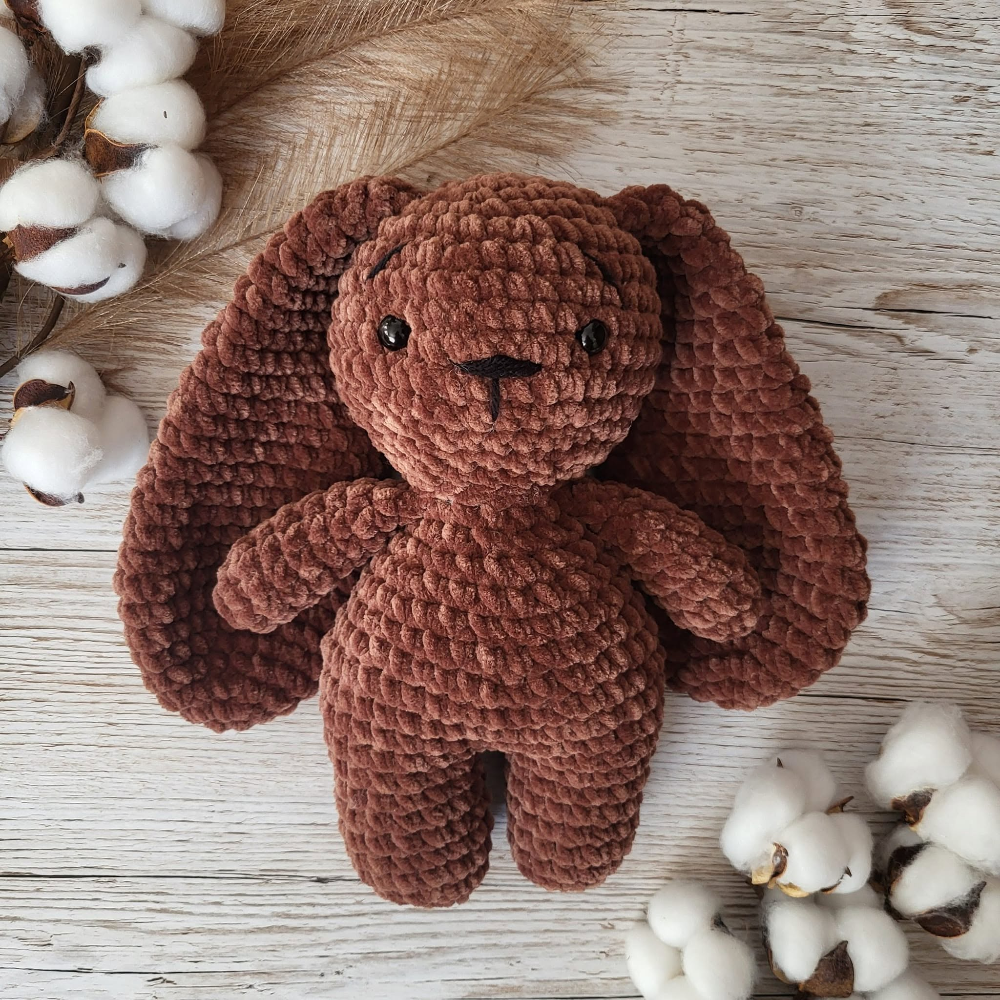

Handmade · na zapytanie · z sercem
Ręcznie robione historie z serca, na szydełku.
Specjalizuję się w torebkach z polskiej przędzy bawełnianej — kolory z bogatej palety, splot z sercem. Robię też maskotki dekoracyjne do pokoju dziecięcego. To nie sklep: wyślij zapytanie, a przygotuję propozycję.
O twórczyni
Nie robię taśmowo.
Każda torebka to godziny przy szydełku i mały kawałek mnie — dlatego trafiają tylko tam, gdzie mają zostać na lata.
Szydełkomania_amigurumi powstała z miłości do miękkich splotów i chęci tworzenia rzeczy, których nie kupisz w sieciówce. Tu nie ma taśmowej produkcji — jest cierpliwość, polska przędza bawełniana i pomysł, który opowiadasz mi w zapytaniu.
Najwięcej szydełkuję torebek — w Twoim kolorze i rozmiarze. Robię też maskotki dekoracyjne do pokoju dziecięcego oraz drobne akcesoria. Wszystko na indywidualne zapytanie: najpierw propozycja i wycena, potem realizacja.
z sercem, Ada
Oferta
Co powstaje na szydełku
Główna oferta to torebki z polskiej przędzy bawełnianej. Maskotki dekoracyjne do pokoju dziecięcego i inne prace — na zapytanie. To nie sklep: wybierz kategorię albo wyślij własną propozycję.
Główna oferta
Torebki
Handmade z polskiej przędzy bawełnianej — 45+ kolorów, rozmiar i detal według Twojego zapytania.
Zobacz więcej
Plecaki
Szydełkowe plecaki z polskiej bawełny — wygodne, miękkie i personalizowane.
Zobacz więcejDodatki
Opaski, breloczki, zawieszki i drobne handmade akcesoria.
Zobacz więcej
Maskotki dekoracyjne
Maskotki dekoracyjne do pokoju dziecięcego — unikatowe amigurumi z szydełka.
Zobacz więcejZestawy do pokoju dziecięcego
Kompletne zestawy dekoracyjne — spójne kolorystycznie, z polskiej bawełny.
Zobacz więcejPersonalizowane zwierzaki
Dekoracyjne amigurumi pupila ze zdjęcia — pamiątka z charakterem.
Zobacz więcejZabawki dla zwierząt
Szydełkowe zabawki dla psów i kotów — solidne, na zapytanie.
Zobacz więcejDekoracje
Szydełkowe dekoracje do domu i okazji — unikatowe ozdoby handmade.
Zobacz więcejKubeczki
Ocieplacze i akcesoria do kubków — handmade na zapytanie.
Zobacz więcejGaleria
Wybrane realizacje
Kilka z setek historii, które wyszły spod szydełka. Kliknij zdjęcie, by powiększyć.
Materiały
Kolory na torebki.
Polska przędza bawełniana.
Do torebek używam polskiej przędzy bawełnianej — ponad 45 odcieni. Wybierasz kolor przy zapytaniu; paleta poniżej ma charakter poglądowy.
- Wanilia
- Pearl
- Ivory
- Ciasteczko
- Koniak
- Kawowy
- Cynamon
- Czekolada
- Łososiowy
- Mandarynka
- Banan
- Cytrynka
- Musztarda
- Miód
- Suszone morele
- Red
- Wino
- Dusty Rose
- Różowy krem
- Marshmallow
- Dessert
- Malina
- Fuksja
- Lilac
- Lawenda
- Plum
- Biskupi
- Niagara
- Morski
- Petrol
- Blue Velvet
- Topaz
- Miami
- Miętowy
- Dusty mint
- Szałwia
- Limonka
- Zielony
- Khaki
- Jodła
- Sundae
- Coconut
- Szary
- Grafit
- Czarny
- Coca
- Blueberry
Jak wysłać zapytanie
Od pomysłu do paczki
Prosty proces — bez sklepu internetowego, bez koszyka, bez „Kup teraz”. Wysyłasz zapytanie, razem ustalimy propozycję i wycenę.
-
Wyślij zapytanie
Formularz na stronie, Facebook albo Instagram. Opisz pomysł — albo dołącz zdjęcie inspiracji.
-
Propozycja i wycena
Odpisuję zwykle w 24h. Ustalamy rozmiar, kolory (polska przędza bawełniana), szczegóły i termin. Bez zobowiązań na start.
-
Zaczynam szydełkować
Po akceptacji warunków siadam do pracy. Każdy splot robiony ręcznie — bez pośpiechu i bez taśmy.
-
Zdjęcia i akceptacja
Wysyłam zdjęcia gotowej pracy przed wysyłką. Możesz potwierdzić albo poprosić o drobne poprawki.
-
Wysyłka
Bezpiecznie pakuję i wysyłam paczkę. Na życzenie — opakowanie prezentowe z karteczką.
Liczby, które mówią o pracowni
0+
torebek i unikatów
0
lat pasji przy szydełku
0+
kolorów polskiej bawełny
Opinie
Co mówią klienci
Placeholdery — podmień na cytaty z Facebooka / wiadomości prywatnych.
„TODO: Wklej opinię z Facebook. Maskotka dekoracyjna do pokoju przyszła pięknie zapakowana, a detale są niesamowite.”
„TODO: Wklej opinię z Facebook. Wysłałam zapytanie o torebkę w kolorze Koniak — wyszła dokładnie tak, jak sobie wymarzyłam. Polecam z całego serca!”
„TODO: Wklej opinię z Facebook. Personalizacja ze zdjęcia naszego pieska wyszła cudownie. Najpiękniejszy prezent urodzinowy, jaki dostałam.”
FAQ
Najczęstsze pytania
Ile trwa realizacja torebki szydełkowej?
Zależnie od modelu i detali — zwykle 7–21 dni roboczych od potwierdzenia warunków. Przy bardziej rozbudowanych projektach termin ustalamy indywidualnie.
Ile kosztuje torebka? Jak działa wycena?
Cena zależy od rozmiaru, wzoru i detali. Po Twoim zapytaniu przygotuję indywidualną propozycję i wycenę — zwykle w ciągu 24 godzin. Nie prowadzę sklepu z gotowymi cenami „z półki”.
Czy wysyłacie paczki w całej Polsce?
Tak. Wysyłam bezpiecznie zapakowane paczki na terenie całej Polski. Szczegóły kosztów i terminów dostawy podaję przy wycenie.
Z jakiej włóczki są torebki? Jakie kolory?
Torebki szydełkuję z polskiej przędzy bawełnianej — ponad 45 kolorów do wyboru (paleta na stronie). Kolor i splot ustalamy przy Twoim zapytaniu.
Czy robisz też maskotki?
Tak — maskotki dekoracyjne do pokoju dziecięcego (nie jako zabawki do intensywnej zabawy). Główna oferta to torebki; maskotki to mniejsza część realizacji. Przy każdej pozycji w ofercie znajdziesz informacje o bezpieczeństwie.
Jak prać torebkę lub dekorację?
Zalecam pranie ręczne w letniej wodzie z delikatnym detergentem, bez wykręcania. Suszyć w pozycji leżącej, z dala od grzejnika. Szczegółową instrukcję dołączam do realizacji.
Jak wysłać zapytanie? Czy to sklep?
Nie — to nie sklep internetowy. Napisz przez formularz albo Facebook / Instagram. Opisz pomysł, dołącz zdjęcie inspiracji jeśli masz — odezwę się z propozycją i wyceną. Nie ma przycisku „Kup teraz”.